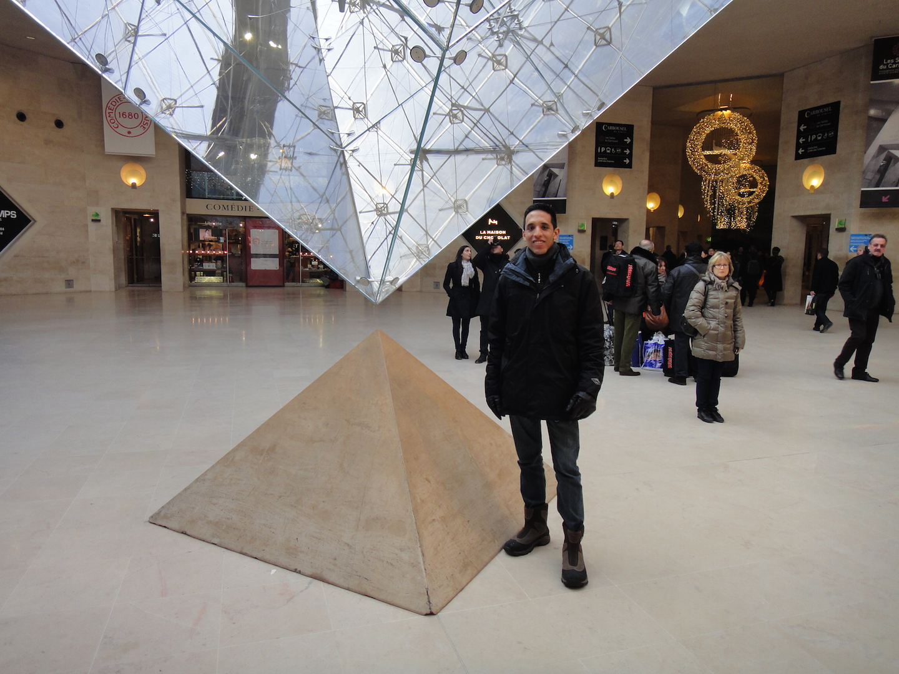

Hi, my name is Juan Pablo, and I'm a Full Stack Web Developer and Electronics Engineer based in Guatemala City. Even though I was born in Mexico, I have spent most part of my life in Guatemala and I have been profoundly influenced lately by Brazil's culture, so I'm a bit of a cultural mix.
Technology has always been one of my biggest passions, along with music, sports and languages (and Star Wars too!). I intend to use this website to share ideas and thoughts regarding those topics, including projects and related articles I think others might find interesting. I received a B.S. in Electronics Engineering from Universidad del Valle de Guatemala in 2013.
My toolbelt is always expanding but often used tools, frameworks and libraries are: Jekyll, Ruby on Rails, AngularJS, Backbone.js, Node.js, MySQL, SQLite, MongoDB, HTML + SASS/LESS/CSS + JavaScript, Bootstrap and Foundation. You can contact me through my email address juan.pinto108@gmail.com. I will happily provide my CV upon request.
Thanks for reading!